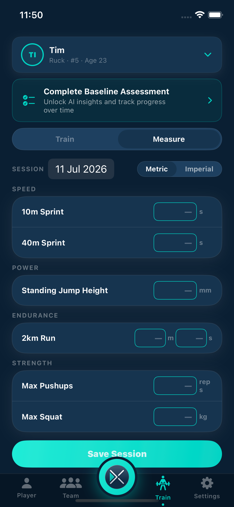
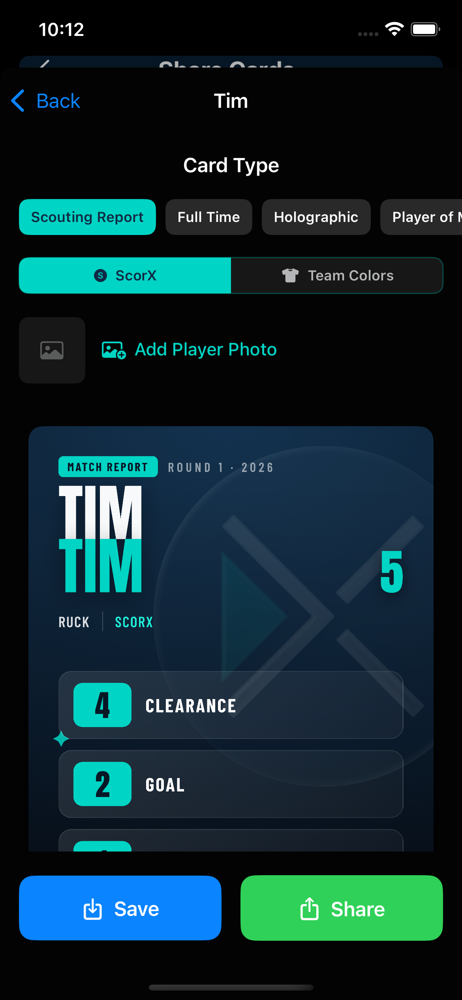
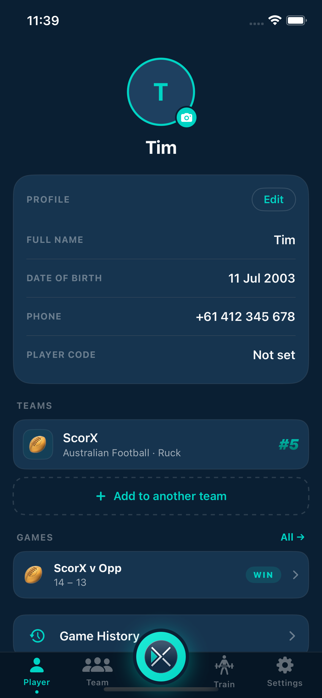

{% if post.category %}
{{ post.category }}
{% endif %}
{{ post.title }}
{{ post.excerpt | strip_html | truncatewords: 28 }}
Read more →ScorX gives athletes a complete picture of their development — from the play-by-play of every game, to where your physical attributes sit against your peers, to a personalised training plan grounded in your actual performance data.
Every game recorded. Every action timestamped. Free for all users.
Free

Free

Record your physical benchmarks and watch them change. Free to record. Premium to compare.
Free — Record & Track

ScorX Premium

AI-powered guidance built from your actual game data, not generic advice.
ScorX Premium
ScorX Premium

From game-day cards to a lifetime sporting record
One style free | Full library: Premium

Free

ScorX Premium

ScorX Free gives athletes complete game history with per-game stat breakdowns and activity timelines, full athleticism metric tracking (sprint, jump, endurance, strength), trend indicators for each metric, and one standard Player Card style — all at no cost. No game limits, no player limits.
The Train section (ScorX Premium) synthesises game statistics, player reflections, and athleticism metrics to generate personalised development guidance using AI. It identifies a primary and secondary skill focus area with evidence from game data, suggests a training approach and session structure, and shows success indicators so you know when the work is paying off.
ScorX tracks ten physical development metrics: 10m sprint time, 40m sprint time, standing jump height, 2km run time, 5km run time, max push-ups, max pull-ups, bench press, squat, and deadlift. Recording measurements is free for all users. Benchmark comparisons (age and sex-specific) require ScorX Premium.
ScorX Premium ($4.99/month or $49.99/year) adds: the full Train section with AI development recommendations, age and sex-specific athleticism benchmarking, the full Player Card style library including sport-specific and sticker formats, AI-generated Season Narratives, and exportable PDF reports.
Player Cards are generated from your game stats and profile photo. One standard card style is free for all users and shareable anywhere — Instagram, WhatsApp, messages. ScorX Premium unlocks the full card library including classic, modern, sport-specific, and sticker formats with custom colour themes and a full card configurator.
The Career Timeline is included in ScorX Free. It's a visual journey through an athlete's complete sporting history — spanning all sports they have played and all seasons recorded. It's the permanent record of a sporting life, shareable with new coaches, family, and the athlete themselves as they progress through junior to senior sport.
Download free. Record your first game today. Upgrade to Premium when you're ready to go deeper.
Download FreeGuides and performance insights to help young athletes train with purpose and measure real progress.
{{ post.excerpt | strip_html | truncatewords: 28 }}
Read more →